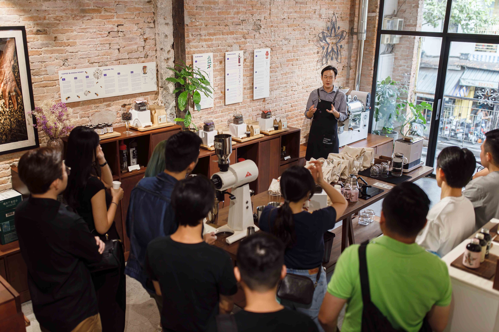
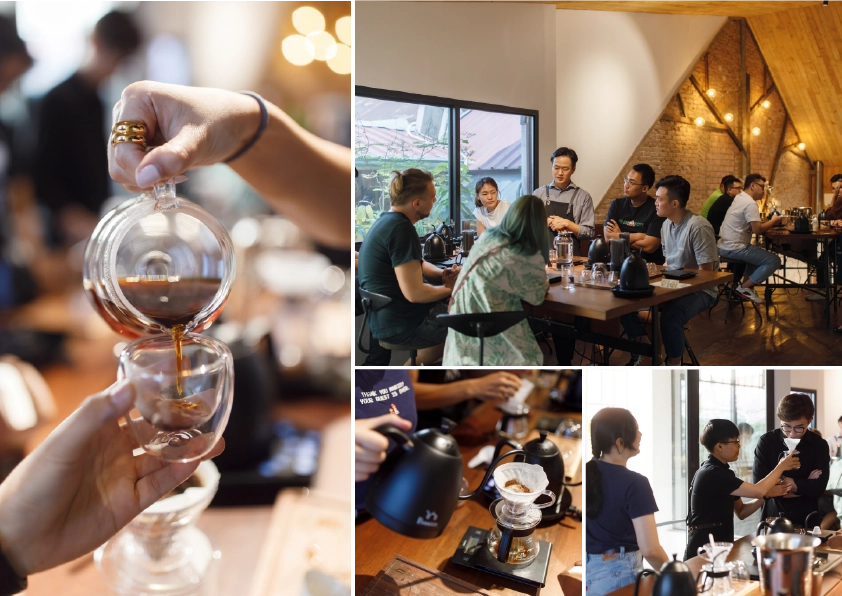

Lacàph Space Sài Gòn luôn chào đón tất cả những người hiếu kì về cà phê Việt Nam. Tại đây, chúng tôi sẽ
lần lượt kể cho bạn nghe những câu chuyện hình thành và phát triển nên các sản phẩm đặc trưng của Lacàph
nói riêng và về lịch sử hạt cà phê nói chung trong suốt 160 năm qua.
Nếu bạn thực sự hiếu kì về cà phê Việt Nam, các thành viên dày dặn kinh nghiệm trong ngành cà phê của
chúng tôi luôn sẵn sàng dẫn dắt bạn đến với những cuộc hành trình cà phê thông qua các sự kiện, hoạt động
thú vị như Coffee Fair, Lacàph Saturday Sessions,…
Lacàph Space toạ lạc tại một căn chung cư cũ ở trung tâm và có 2 tầng. Tầng 1 là nơi trưng bày và giới thiệu tất
cả các sản phẩm của chúng tôi bao gồm cà phê, trà, sản phẩm đóng chai và các máy móc, dụng cụ pha chế tại
nhà.

Tầng 2 là nơi chúng tôi tổ chức các sự kiện và các hoạt động thú vị như hội chợ cà phê Coffee Fair, Lacàph
Saturday Sessions hoạt động hướng dẫn pha cà phê thủ công,… Chúng tôi cũng phục vụ thực đơn các lựa chọn
cà phê cơ bản để bạn có thể thưởng thức và trải nghiệm hương vị cà phê từ Lacàph Signature Blends.

Thời gian hoạt động của Lacàph Space Sài Gòn
Chủ nhật – Thứ Năm, 9:30–17:30
Thứ Sáu – Thứ Bảy, 9:30–21:30